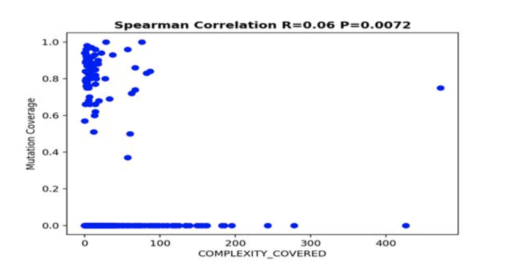
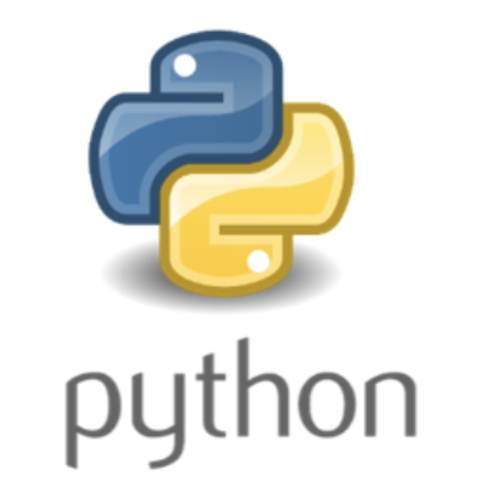
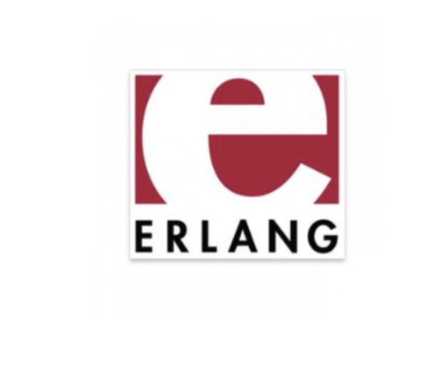

Being seasoned with 3+ years of Software Engineering experience, he has gained expertise in decision making and problem-solving by using appropriate design methodology and development process for any software development after proper analysis of the problem and the user-requirements.
He aspires to work as a Software Engineer with a company, where he will apply his technical skills and talent to contribute towards the development of highly reliable
and efficient software. He is a quick learner and an objective-driven person, seeking perfection always.

Risk is a strategy board game for two to six players. This was a group project and was implemented using Object Oriented Principles and appropriate design Patterns in JAVA 1.8. The Project had 3 Iterations with incremental build and change of Data Structures and design patterns when and where required after every phase following Agile Principles and Advanced Programming Practises. Unit Testing was made using JUnit v5.0 and always keeping test coverage of 60% or above and updating JAVADOC for better comprehensibility. Java FX was used in Iteration 3 for user-friendly GUI. For more details, click on "Full Story".

This was a group project and we had to select any 5 maven projects having very high LOC. Softwares were analyzed and plotted using Spearsman's Regression model using Python v2.6 (pandas). 5 metrics were selected for finding out the relations between those metrics. Test suite Quality was tested using Mutation testing and mutation score generated using the PIT tool. For a more precise mutation score, PIT configurations were manipulated. For getting more insights over this analysis, click on "Full Story".

Python is easy to use, dynamically typed Object-Oriented language. It is syntactically similar to C-style languages like C++, C# and Java, but is somewhat simpler to understand, at least at the modest level of skill required for this project.
Developed a small customer database server and also a trivial client application to access the server without the use of any 3rd party libraries. The idea is that you will send a request (just a text string) to the server and ask for a specific task to be performed. Data handling and error checking are done at every step. The application was developed using Python v2.6 and for more details check out the full project description.

This project is really simple and is all about loading data from a series of three disk files. This data will then form your Sales database. Each table will have a “schema” that indicates the fields inside. Read the description for complete details.

while Erlang is a functional language, in the same general class as Clojure. The main focus over here is the concurrency model provided by Erlang. In particular, this project helped me in gaining some familiarity with the concept of message passing. Erlang does this more effectively than any other modern programming language.
For this project, I used Intellij and erlang plugin using -noshell commands in terminal. File(data) was to be fetched and a data structure was to be populated and message passing is implemented on that data lists. For more details view my project on GitHub.
Learned to build actual desktop programs, web applications and even mobile apps entirely in Python 3.the 10 Python applications I built are: A program that returns English-word definitions, A web map visualizing volcanoes and population data, A portfolio website, A desktop-graphical program with a database backend, A mobile app that improves your mood, A webcam motion detector, A web scraper of real estate data, An interactive web graph, A database web application and A web service that converts addresses to geographic coordinates.
For more details view my Repo on GitHub.